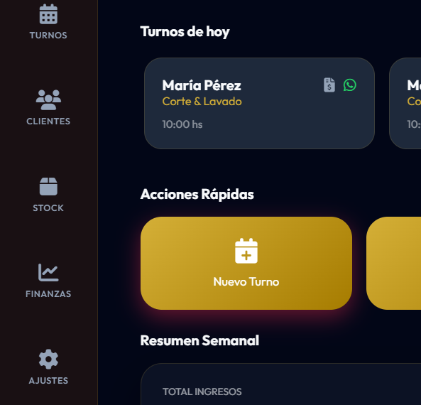
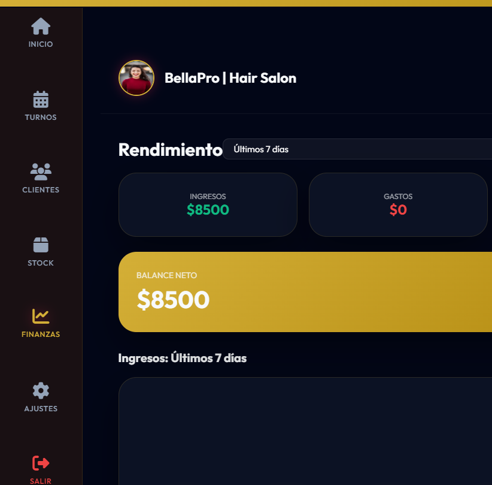
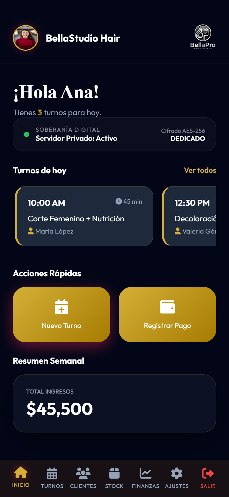
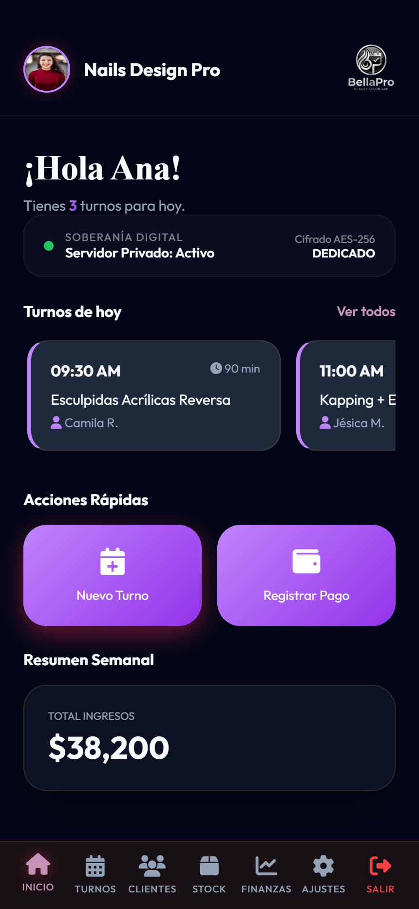
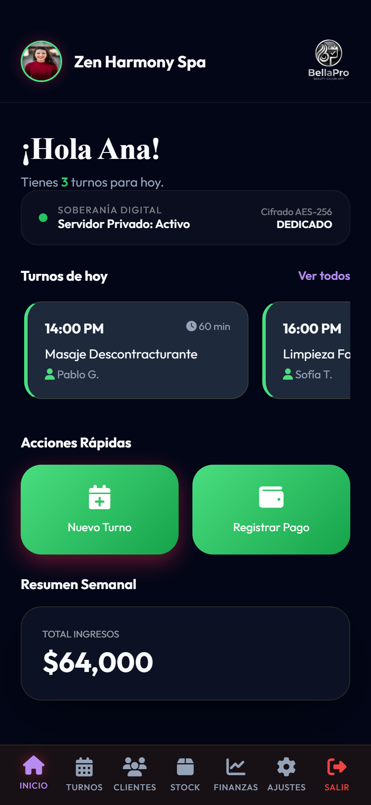

Aprende a usar
tu nuevo sistema.
Esta guía está diseñada para que cualquier persona del equipo aprenda a utilizar BellaPro en menos de 5 minutos. Con instrucciones claras e imágenes reales de la aplicación en funcionamiento.
1. Instalación en tu Celular
BellaPro no ocupa memoria de tu teléfono ni requiere largas descargas. Es una App Web Inteligente.
En iPhone (Safari)
- Abre el enlace de BellaPro en Safari.
- Toca el ícono de "Compartir" (el cuadrado con la flecha) al fondo de la pantalla.
- Desliza hacia abajo y elige "Agregar a inicio".
En Android (Chrome)
- Abre el enlace en Google Chrome.
- Toca los tres puntitos arriba a la derecha.
- Selecciona "Instalar aplicación" o "Agregar a pantalla principal".
2. Cómo Agendar un Turno
Cargar un cliente y agendar su cita te tomará menos de 10 segundos.
Abre el formulario
En la pantalla principal, busca el botón grande que dice "Nuevo Turno" y presiónalo. Inmediatamente se abrirá una ventana como la que ves en la imagen.
- Escribe el nombre del cliente.
- Selecciona el servicio que le vas a realizar (el precio y duración se cargan solos).
- Elige el día y la hora de su cita.
- Presiona el botón verde "Guardar". ¡Listo!

3. Revisa tus Ganancias Diarias
BellaPro lleva la cuenta de cuánto dinero haces sin que tengas que usar calculadora o cuadernos.
Panel Financiero
Cuando un cliente termina su servicio y te paga, presiona "Marcar como Finalizado" en su turno. Automáticamente, ese dinero entra a tus estadísticas.
- Desde tu menú inicial, presiona "Finanzas".
- Verás un número en grande: es tu ingreso total seleccionado.
- Usa los botones de filtro (Hoy, Esta Semana, Este Mes) para ver tus reportes de inmediato.
- Abajo, verás la lista detallada de los cobros realizados.

4. Interfaz Personalizada
Si compartes BellaPro con compañeras que hacen diferentes servicios, cada una tendrá su propia pantalla con sus colores y sus clientes exclusivos.
Peluquería

Tonos dorados, diseñada para estilistas y barberos.
Nails Studio

Tonos púrpura intenso para expertas en manicura.
Wellness & Spa

Tonos naturales para masajes y limpieza facial.